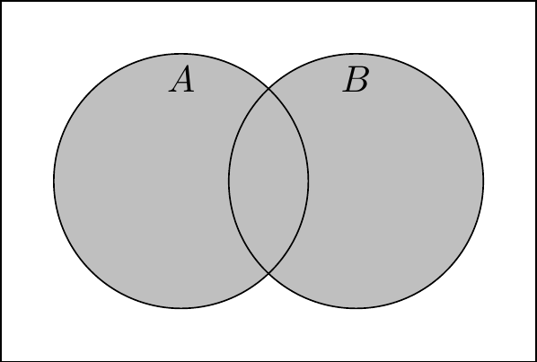
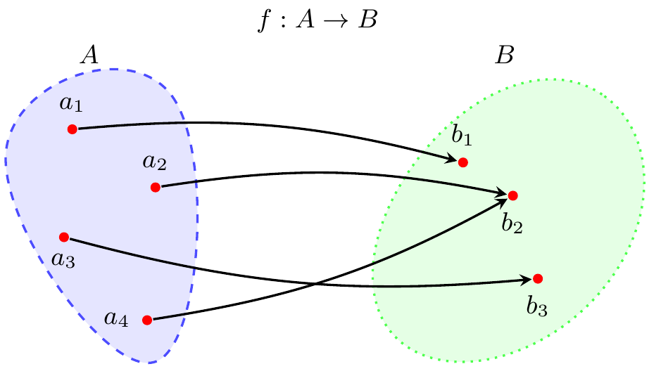

2 Set Theory
2.1 What are sets and why do we care?
Seemingly every book on “higher math” — the kind of math you encounter after the intro calculus sequence in college — starts with a discussion of set theory. There are some deep mathematical reasons to begin this way, which you can read about on Wikipedia or, for the especially high-minded, the Stanford Encyclopedia of Philosophy. To summarize it very loosely: although most people think of math as being about numbers, most important mathematical statements (including those about numbers!) are ultimately actually rooted in the properties of sets.
I’m putting set theory before our study of numbers-type math for reasons that are related, but more prosaic.
Set theory gives us a lot of our mathematical “language”.
Many of the definitions of day-to-day tools in calculus and linear algebra are stated in terms of sets and operations on sets.
In political science research, we use mathematical notation to concisely-yet-precisely summarize quantitative concepts. This notation often involves sets and operations on sets, so we need to get familiar if we want to be fluent in the “language” of math.
Set theory gives us some nice examples of mathematical statements that are relatively easy to prove, making it a convenient as we get more practice writing proofs.
All right, so what is a set? Precisely because sets are so foundational, that turns out to be quite a sticky question to answer rigorously, so we will content ourselves with a non-rigorous definition.
Definition 2.1 (Sets and elements) A set is a collection of objects, which we call the elements of the set. The notation \[A = \{1, 2, 4, 8\}\] is equivalent to saying “\(A\) is the set whose elements are 1, 2, 4, and 8.”
When we want to say briefly that \(a\) is an element of the set \(A\), we write \(a \in A\). It is typical to use capital letters to denote sets and lowercase letters to denote their elements, though sometimes it is convenient or necessary to break this convention.
Sets aren’t just for numbers
A set may consist of objects besides numbers. It is coherent to say “let \(P\) be the set of people who have been US presidents”, so that \[P = \{\text{George Washington}, \text{John Adams}, \ldots, \text{Donald Trump}\}.\]
Although sets aren’t just for numbers, there are a few sets of numbers that come up so often that we have special names for them. These are listed in Table 2.1.
| Name | Notation | Definition |
|---|---|---|
| Natural numbers | \(\mathbb{N}\) | The counting numbers: 1, 2, 3, … and so on indefinitely. (Some textbooks treat 0 as a natural number, but usually not.) |
| Integers | \(\mathbb{Z}\) | The whole numbers: …, -2, -1, 0, 1, 2, … |
| Rational numbers | \(\mathbb{Q}\) | Numbers that can be expressed as a quotient (hence the symbol \(\mathbb{Q}\)) of integers, \(\frac{a}{b}\), where \(a \in \mathbb{Z}\), \(b \in \mathbb{Z}\), and \(b \neq 0\). |
| Real numbers | \(\mathbb{R}\) | Every number on the number line, including irrational numbers like \(\sqrt{2}\) and \(\pi\). |
| Closed interval | \([a, b]\) | Every real number between \(a\) and \(b\), including \(a\) and \(b\) themselves. |
| Open interval | \((a, b)\) | Every real number between \(a\) and \(b\), not including \(a\) and \(b\) themselves. |
What if you wanted to define \(A\) as the set of natural numbers that are greater than 1000? Well, you could — and often should — simply write, “Let \(A\) be the set of natural numbers that are greater than 1000.” Don’t fall into the trap of equating rigor with fancy notation. If ordinary language can clearly communicate what you mean, use it.
That said, there are times when ordinary language is too cumbersome or imprecise to describe the contents of a set. Maybe there are a lot of conditions on the set you’re defining, or maybe the condition involves a finicky formula that’s hard to put into words. In these cases, it is common to use set-builder notation, for example \[A = \{x \in \mathbb{N} \mid x > 1000\}.\] You would read this as “\(A\) is the set of natural numbers \(x\) such that \(x\) is greater than 1000”.
I always use the vertical bar \(\mid\) when writing in set-builder notation, but sometimes you will see people use the colon \(:\) instead. These are just different conventions with no differences in underlying meaning.
Or what if we wanted to define \(B\) as the set of values we obtain by taking a natural number and dividing it in half? We could write this in set-builder notation as \[B = \{x \in \mathbb{R} \mid x = \frac{n}{2} \: \text{for some $n \in \mathbb{N}$}\}.\] But we’ll often use the following shorthand to write this a bit less cumbersomely: \[B = \{\frac{n}{2} \mid n \in \mathbb{N}\}.\] Again, none of these, including the verbal description of \(B\) at the start of the paragraph, is the “right” way to denote the set. What’s best is whatever gets the point across clearly to your intended audience. Thinking about the audience is key — you might want to write the exact same mathematical object in a different way in your undergraduate lecture notes than in a manuscript you’re submitting to Political Analysis.
Exercise 2.1 Use set-builder notation to describe the following sets:
Every integer that is a multiple of 7.
Every natural number that is odd.
Every rational number between 0 and 1, including 0 and 1 themselves.
Answers
\(\{7z \mid z \in \mathbb{Z}\}\). (An integer that is a multiple of 7 is just some other integer multiplied by 7. For example, you can think of \(-35\) as \(7 \times -5\).)
\(\{2n - 1 \mid n \in \mathbb{N}\}\).
\(\{x \in [0, 1] \mid x \in \mathbb{Q}\}\).
2.2 Fundamental operations on sets
2.2.1 Subsets and equality
When we’re dealing with numbers, we compare them in terms of their values. 40 is greater than 38, which in turn is greater than 10. With sets, we make comparisons in terms of their elements — namely, whether all of the elements of one are contained in another.
Definition 2.2 (Subset) The set \(A\) is a subset of the set \(B\), denoted \(A \subseteq B\), if every element of \(A\) is an element of \(B\).
Inclusion \(\in\) versus subset \(\subseteq\)
\(A \subseteq B\) and \(A \in B\) have very different meanings. \(A \subseteq B\) means “every element of \(A\) is also an element of \(B\)”. \(A \in B\) means “the set \(A\) is, itself, an element of \(B\)”. When you’re talking about sets, you usually mean the first of these, not the second.
If you mess up and use the wrong notation, your readers will probably still ultimately figure out what you mean — but it’ll take a bit longer for them than if you’d used the right notation. So it’s in your best interest to use the right notation for much the same reason as it’s in your best interest to use proper spelling and grammar.
You probably won’t be surprised to learn that subsets are like nesting dolls: if \(A\) is a subset of \(B\), then it is also a subset of any other set that \(B\) is a subset of. I’m bringing up this seemingly obvious fact mainly because it’ll give us a nice first statement about set theory to prove. Not to mention that some seemingly obvious things turn out not to be true at all — which is one of the reasons it’s important to prove our mathematical claims.
Proposition 2.1 (Transitivity of subset) If \(A \subseteq B\) and \(B \subseteq C\), then \(A \subseteq C\).
Proof. We need to show that every element of \(A\) is also an element of \(C\). To do that, we will take an “arbitrary” element of \(A\) — a mathematical object that we know nothing about, other than that it is an element of \(A\) — and show that it is an element of \(C\). To that end, let \(a\) be any element of \(A\). Because \(a \in A\) and \(A \subseteq B\), it follows that \(a \in B\). Because \(a \in B\) and \(B \subseteq C\), it follows that \(a \in C\). Because the element \(a\) was chosen arbitrarily, we have shown that every element of \(A\) is an element of \(C\), and therefore \(A \subseteq C\).
Proving a “for all” claim
The proof of Proposition 2.1 gets into some formal logic that we didn’t explicitly cover in Chapter 1. The proof relies on the fact that the proposition can be stated this way:
Premise 1: For all \(a \in A\), \(a \in B\). (i.e., \(A \subseteq B\))
Premise 2: For all \(b \in B\), \(b \in C\). (i.e., \(B \subseteq C\))
Conclusion: For all \(a \in A\), \(a \in C\). (i.e., \(A \subseteq C\))
The method I used in the proof of Proposition 2.1 is the standard way to prove a “for all” statement. Suppose we are trying to prove a statement of the variety “for all \(x \in X\), \(P(x)\) is true,” where \(P(x)\) is some sentence about \(x\). A proof like that typically starts with “Take an arbitrary \(x \in X\),” meaning we are assuming we know nothing about \(x\) besides that it is a member of \(X\). From there, we use what we know about \(X\) to show that \(P(x)\) is indeed true.
You need to be very careful with negations of “for all” statements. We can falsify the statement “for all \(x \in X\), \(P(x)\) is true” by finding a single element of \(X\) for which \(P(x)\) is false. Hence, the negation of “for all \(x \in X\), \(P(x)\) is true” is not “for all \(x \in X\), \(P(x)\) is false.” Instead, the correct negation is “there exists an \(x \in X\) for which \(P(x)\) is false.”
FYI, in case it comes up in other things you read, the symbol \(\forall\) means “for all” and the symbol \(\exists\) means “there exists.” I might write these on the whiteboard sometimes to save space, but I almost never use them in academic writing.
Intuitively, two sets are equal if they have the same elements. One of the annoying-but-ultimately-good things about math is that we have to be precise about statements like “they have the same elements”. Does \(\{1, 2, 3\}\) equal \(\{3, 2, 1\}\)? Does \(\{a, b, c\}\) equal \(\{a, a, b, b, c, c\}\)? The answer to both of these questions turns out to be “yes” — but why? It comes down to the formal definition of set equality, which we state as each set being a subset of the other.
Definition 2.3 (Set equality) The sets \(A\) and \(B\) are equal, denoted \(A = B\), if \(A \subseteq B\) and \(B \subseteq A\).
We can again make an analogy to how we compare numbers. If \(a\) and \(b\) are numbers, then we have \(a = b\) precisely when both \(a \leq b\) and \(b \leq a\).
Now let’s return to the question of whether \(\{1, 2, 3\} = \{3, 2, 1\}\). First we show that \(\{1, 2, 3\} \subseteq \{3, 2, 1\}\):
- \(1 \in \{3, 2, 1\}\) ✅
- \(2 \in \{3, 2, 1\}\) ✅
- \(3 \in \{3, 2, 1\}\) ✅
And then we show that \(\{3, 2, 1\} \subseteq \{1, 2, 3\}\):
- \(3 \in \{1, 2, 3\}\) ✅
- \(2 \in \{1, 2, 3\}\) ✅
- \(1 \in \{1, 2, 3\}\) ✅
You can generalize the logic here to show that a set is the same no matter what order we write the elements in. I’ll also leave it to you to show that repetition of an element is immaterial to the membership of a set, so that (for example) \(\{a, b, c\} = \{a, a, b, b, c, c\}\).
Just like equality of numbers, equality of sets is transitive: if one set is equal to another, which in turn is equal to some third set, then the first is equal to the third as well.
Corollary 2.1 (Transitivity of set equality) If \(A = B\) and \(B = C\), then \(A = C\).
By following the template provided by the proof of Proposition 2.1, you should be able to prove this result yourself. If you’re having trouble getting started, one good principle to keep in mind when writing a proof is to take stock of all the “knowns” that might be relevant and have already been defined or proved. For this question, relevant facts would include the definition of set equality (Definition 2.3) and the transitivity of the subset operation (Proposition 2.1).
Exercise 2.2 Prove Corollary 2.1.
Answer
We need to show that if \(A = B\) and \(B = C\), then \(A \subseteq C\) and \(C \subseteq A\). By the definition of set equality, if \(A = B\) and \(B = C\), then \(A \subseteq B\) and \(B \subseteq C\). Proposition 2.1 then implies that \(A \subseteq C\).
Again by the definition of set equality, if \(C = B\) and \(B = A\), then \(C \subseteq B\) and \(B \subseteq A\). Proposition 2.1 then implies that \(C \subseteq A\).
We have shown that if \(A = B\) and \(B = C\), then \(A \subseteq C\) and \(C \subseteq A\), so by definition \(A = C\).
(In the second paragraph, I implicitly relied on the commutativity of set equality, i.e., that if \(A = B\), then \(B = A\). That’s another thing you can prove yourself at this point if you’re skeptical!)
2.2.2 The Venn diagram operations
We want to be able to talk about combinations of sets. Once again, a bit of mathematical notation will help us quickly convey exactly what we mean. If I say “the set of presidents and vice presidents”, do I mean all of the people who have served in either role, or only those who have served in both? We know Richard Nixon and Joe Biden are in it either way, but what about Barack Obama? Mathematically speaking, we need to be sure if we are talking about the union or the intersection of the sets of presidents and vice presidents.
Definition 2.4 (Union and intersection) The union of the sets \(A\) and \(B\), denoted \(A \cup B\), is the set of elements that are in \(A\), in \(B\), or both: \[A \cup B = \{x \mid x \in A \text{ or } x \in B\}.\] The intersection of the sets \(A\) and \(B\), denoted \(A \cap B\), is the set of elements that are in both \(A\) and \(B\): \[A \cap B = \{x \mid x \in A \text{ and } x \in B\}.\]

Hey, the union operator \(\cup\) looks a lot like the logical “or” operator \(\lor\), and the intersection operator \(\cap\) looks a lot like the logical “and” operator \(\land\). I wonder if that’s a coincidence?
For example, let \(P\) be the set of presidents, and \(Q\) be the set of vice presidents. Because Barack Obama was president but not vice president, he belongs to the union of these sets, but not the intersection: \[\begin{gather} \text{Barack Obama} \in P \cup Q, \\ \text{Barack Obama} \notin P \cap Q. \end{gather}\] Naturally, more people have been president or vice president than have been both president and vice president. In mathematical terms, the intersection \(P \cap Q\) is a subset of the union \(P \cup Q\). This turns out to be a general property of sets, not just of American national officeholders.
Proposition 2.2 \(A \cap B \subseteq A \subseteq A \cup B\).
Proof. There are two claims to prove here. The first is that \(A \cap B \subseteq A\). To prove this, take any element \(x \in A \cap B\). By definition of the intersection, it must be the case that \(x \in A\). Therefore, \(A \cap B \subseteq A\).
The second claim to prove is that \(A \subseteq A \cup B\). To prove this, take any element \(x \in A\). By definition of the union, \(x \in A \cup B\). Therefore, \(A \subseteq A \cup B\).
What if we wanted to talk about the set of people who have been president, but not vice president? We can formulate this using the set difference.
Definition 2.5 (Set difference) The set difference between sets \(A\) and \(B\), denoted \(A \setminus B\), is the set of elements that are in \(A\) and not in \(B\): \[A \setminus B = \{a \in A \mid a \notin B\}.\]
Joe Biden was both a vice president and a president. Barack Obama was only president, never a vice president. Aaron Burr was only vice president, never president. Therefore, we have the following set memberships:
| Old guy | \(P\) | \(Q\) | \(P \cap Q\) | \(P \cup Q\) | \(P \setminus Q\) | \(Q \setminus P\) |
|---|---|---|---|---|---|---|
| Joe Biden | x | x | x | x | ||
| Barack Obama | x | x | x | |||
| Aaron Burr | x | x | x |
Exercise 2.3 Using the union, intersection, and the set difference, find a way to denote the set of elements that are in exactly one of \(A\) and \(B\), but not both.
Answer
\((A \cup B) \setminus (A \cap B)\).
No one who has been the president of the United States has also been the prime minister of the United Kingdom. If we were to let \(M\) denote the set of people who have been prime minister, then the intersection \(P \cap M\) would be a set that contains … nothing? Yes, indeed, a set may contain nothing. We have a special name for the set with nothing in it — the empty set.
Definition 2.6 (Empty set) The empty set is the set containing no elements, denoted \(\emptyset\).
Using this notation, a concise way to say “no one has been both the US president and the UK prime minister” would be \(P \cap M = \emptyset\). We say two sets are disjoint when their intersection is empty.
Exercise 2.4 Prove the following properties of the empty set:
\(A \cup \emptyset = A\).
\(A \cap \emptyset = \emptyset\).
Answers
We know from Proposition 2.2 that \(A \subseteq A \cup \emptyset\), so we only need to prove that \(A \cup \emptyset \subseteq A\). To this end, take any element \(x \in A \cup \emptyset\). By definition of the union, it must be the case that \(x \in A\) or that \(x \in \emptyset\). The second of these is impossible, so it must be the case that \(x \in A\). As \(x\) was chosen arbitrarily, this proves that \(A \cup \emptyset \subseteq A\). Finally, because \(A \subseteq A \cup \emptyset\) and \(A \cup \emptyset \subseteq A\), we have \(A \cup \emptyset = A\).
We know from Proposition 2.2 that \(A \cap \emptyset \subseteq \emptyset\). If there were an element \(x \in A \cap \emptyset\), then it would follow from the definition of intersection that \(x \in \emptyset\). But that cannot be the case, as \(\emptyset\) is the set with no elements. Therefore, there is no element \(x\) included in \(A \cap \emptyset\). By definition, then \(A \cap \emptyset = \emptyset\).
2.2.3 Complements and De Morgan’s laws
The set difference \(A \setminus B\) is the set of everything in \(A\) that’s not in \(B\). But what if we simply wanted the set of everything that’s not in \(B\), whether it’s in \(A\) or not? Once we can properly define this type of set, we will call it the complement of \(B\).
Before we can do that, we need to be clear about what “everything” is. For example, again taking \(P\) to be the set of people who have been the US president, it seems clear enough that \[\text{Aaron Burr} \in \{x \mid x \notin P\}.\] But would we say that the number 3 is also an element of this set? What about the chemical formula H\(_2\)O or the human gene CNR1? If nothing else, it doesn’t seem to be very useful to say that these are not people who have been president, true as that may be.
To have a useful working definition of “everything not in this set”, we are going to assume there’s a set \(U\) that contains the universe of objects we might be interested in. The appropriate choice of universal set depends on the context for what we want to do. Most commonly, if we are talking about numbers that lie along the typical number line, our universal set might be the real line, \(\mathbb{R}\). Or if we are talking about who has and has not held particular political positions, our universal set might be the set of all people who have ever lived.
Once we have settled on the universe of objects we care about, it’s simple to define the complement of a set.
Definition 2.7 (Complement) The complement of the set \(A\), denoted \(A^c\), is the set of all elements in the universe that are not in \(A\), i.e., \(A^c = U \setminus A\).
You don’t often see the universal set explicitly specified in mathematical writing, other than textbook set theory treatments like what you’re reading right now. I assume this is because most mathematical writers follow the same conventions I do:
The appropriate definition of a universal set should be clear from the context. For example, if all of the mathematical objects discussed are real numbers and sets of real numbers, then \(U = \mathbb{R}\).
If the context is not clear enough for there to be a natural choice of universal set (e.g., you’re talking about sets of radically different types of objects), then use explicit set differences when needed rather than taking complements of sets.
Taking our universe as the set of all people, let’s think about the complement of the union of sets of everyone who’s been a president or vice president, \((P \cup Q)^c\). Anyone who’s been a president or a vice president is an element of \(P \cup Q\). Therefore, if someone is not an element of \(P \cup Q\), that tells us that the person has never been president and has never been vice president. In other words, that person belongs to both \(P^c\) and \(Q^c\), and thus also to their intersection \(P^c \cap Q^c\). This is an illustration of a very useful pair of set properties called De Morgan’s laws.
Theorem 2.1 (De Morgan’s laws)
\((A \cup B)^c = A^c \cap B^c\).
\((A \cap B)^c = A^c \cup B^c\).
Hey, these look a lot like the De Morgan’s laws for formal logic (Theorem 1.3)! I wonder if that’s a coincidence?
Proof. I’ll prove the first law, and leave the second to you as Exercise 2.5. First we have to prove that \((A \cup B)^c \subseteq A^c \cap B^c\). To this end, take any \(x \in (A \cup B)^c\), so that \(x \notin A \cup B\). By definition of the union, this implies \(x \notin A\), hence \(x \in A^c\). By the same token, \(x \notin B\), hence \(x \in B^c\). Because \(x \in A^c\) and \(x \in B^c\), we have \(x \in A^c \cap B^c\). As \(x\) was chosen arbitrarily, this shows that \((A \cup B)^c \subseteq A^c \cap B^c\).
Next, to complete the proof of equality, we have to prove that \(A^c \cap B^c \subseteq (A \cup B)^c\). To this end, take any \(x \in A^c \cap B^c\). By definition of the intersection, \(x \in A^c\), hence \(x \notin A\). By the same token, \(x \in B^c\), hence \(x \notin B\). Because \(x \notin A\) and \(x \notin B\), we have \(x \notin A \cup B\) and thus \(x \in (A \cup B)^c\). As \(x\) was chosen arbitrarily, this shows that \(A^c \cap B^c \subseteq (A \cup B)^c\).
Exercise 2.5 Prove that \((A \cap B)^c = A^c \cup B^c\).
Answer
The steps are the same as in the proof of the first part above, so I’ll be a bit briefer about them.
Take any \(x \in (A \cap B)^c\). Because \(x \notin A \cap B\), it must be the case that \(x \in A^c\) or \(x \in B^c\). If \(x \in A^c\), then \(x \in A^c \cup B^c\). Otherwise, if \(x \notin A^c\), then \(x \in B^c\) and thus \(x \in A^c \cup B^c\). Either way, we have \(x \in A^c \cup B^c\). Consequently, \((A \cap B)^c \subseteq A^c \cup B^c\).
Now take any \(x \in A^c \cup B^c\). It must be the case that \(x \in A^c\) or \(x \in B^c\). If \(x \in A^c\), then \(x \notin A\), hence \(x \notin A \cap B\), hence \(x \in (A \cap B)^c\). Otherwise, if \(x \notin A^c\), then \(x \in B^c\), hence \(x \notin B\), hence \(x \notin A \cap B\), hence \(x \in (A \cap B)^c\). Either way, we have \(x \in (A \cap B)^c\). Consequently, \(A^c \cup B^c \subseteq (A \cap B)^c\).
2.3 Functions
Every US president took office at some recognizable point in time. George Washington’s first term began in 1789. Grover Cleveland’s first term began in 1893. Barack Obama’s first term began in 2009. I could go on, but you get the point. For every president, there is exactly one year when they became president for the first time.
What we’ve done here is associate each president, an element of set \(P\) as we’ve been calling it, with a natural number, an element of \(\mathbb{N}\). “The year that a given president took office” is what we call a function, which we might say “maps” one set into another. The notation \(f : A \to B\) is a bit of mathematical shorthand that means “\(f\) is a rule that takes each element of \(A\) and associates it with an element of \(B\)”. For any element \(a \in A\), we write \(f(a)\) to stand for the element of \(B\) that the function associates \(a\) with. When a function maps \(A\) into \(B\), we call \(A\) the domain and \(B\) the codomain.
To continue the example, let \(y : P \to \mathbb{N}\) (verbally: “\(y\) is a function that maps the set of presidents into the set of natural numbers”) be the function that associates each president with the year they first took office. Then we have \(y(\text{George Washington}) = 1789\), \(y(\text{Grover Cleveland}) = 1893\), and so on. The domain of this function is the set of presidents, \(P\), and the codomain is the set of natural numbers, \(\mathbb{N}\).
Some associations between sets are not functions. When we’re thinking about the set of presidents, \(P\), you might be tempted to think about a function that associates each president with their vice president. However, no such function exists, for two reasons.
A function associates every element of its domain with an element of the codomain. However, some presidents had no vice president. For example, Andrew Johnson, who assumed the presidency after Abraham Lincoln’s assassination, never had a vice president.
A function associates each element of the domain with exactly one element of the codomain. However, some presidents have had multiple vice presidents. For example, both Spiro Agnew and Gerald Ford served as vice president to Richard Nixon.
In mathematical terms, we would call the president-and-their-vice-president(s-if-any) assocation a relation. Any function is a relation, but many relations are not functions. There are lots of cool things to study about relations, but I cannot say in good faith that you must know these cool things, so that is all I will say about relations.
Exercise 2.6 Come up with a function that maps the set of presidents, \(P\), into the set of vice presidents, \(Q\). Convince yourself that it satisfies the key requirement of a function — that every element in \(P\) is associated with one, and exactly one, element in \(Q\).
One answer
I propose the function \(f : P \to Q\) defined so that \(f(p) = \text{Joe Biden}\) for every president \(p \in P\). This rule associates every president with a vice president, so it is a function.
This might seem like a dumb example, but it meets the criteria that I set out, making it a valid answer. Math is legalistic in this way: the question asked for a function \(f : P \to Q\), I provided a function \(f : P \to Q\), and therefore I got the answer right. So if you’re here in a political science PhD program because your law school dreams didn’t quite work out, take comfort in knowing that you can still get to be a legalistic jackass when you’re working in the world of math.
2.3.1 One-to-one and onto functions
As you saw in Exercise 2.6, there is nothing in the definition of a function to suggest that every element of the domain must be associated with a different element of the codomain. Some functions do have this additional property, and we call those functions one-to-one.
Definition 2.8 (One-to-one) A function \(f : A \to B\) is one-to-one, also called injective, if \(f(a) \neq f(a')\) for all distinct elements \(a \in A\) and \(a' \in A\).
The function \(y : P \to \mathbb{N}\) that we discussed earlier, mapping presidents into the year that they first took office, is not one-to-one. William Henry Harrison took office in March 1841, famously gave a lengthy speech in poor weather, caught cold, and died a month later. His vice president, John Tyler, took office in April 1841. In terms of the function we defined, \[y(\text{William Henry Harrison}) = y(\text{John Tyler}) = 1841.\] Because these are two different presidents with the same function value, \(y\) is not one-to-one.
You also saw in Exercise 2.6 that a function need not reach every element of its codomain. In fact, if the domain has fewer elements than the codomain — such as with the sets of presidents \(P\) and vice presidents \(Q\), where at the time of writing there have been 45 presidents and 50 vice presidents — it would be impossible for the function to reach every element of the codomain. In the special case where a function does reach every element of the codomain, we turn a preposition into an adjective and say the function is onto.
Definition 2.9 (Onto) A function \(f : A \to B\) is onto, also called surjective, if for every element \(b \in B\) there is some element \(a \in A\) such that \(f(a) = b\).

We have already seen that the function that maps presidents into the first year they took office is not one-to-one. It is not onto either. Consider 1999, the year The Matrix came out and inspired legions of nerds (like me…) to make green-on-black their default color theme for computing. 1999 is a natural number, or \(1999 \in \mathbb{N}\) if you want to be formal about it, and yet no president took office for the first time then; Bill Clinton, who had first taken office in 1993, was the president the entire year. We have found a number \(n \in \mathbb{N}\) such that \(y(p) \neq n\) for all presidents \(p \in P\), meaning \(y\) is not onto.
Functions that are both one-to-one and onto, which we call bijections, are special. What makes them special is that they can be reversed, or inverted in the language of mathematics. I like to think of a bijection as creating a “buddy system” between its domain and a codomain. Think about a bijection \(f\) that maps elements of (domain) \(A\) into (codomain) \(B\), so we’d write \(f : A \to B\). Then for every element \(a\) of \(A\), there is exactly one element \(b\) of \(B\) such that \(f(a) = b\). And for every element \(b\) of \(B\), there is exactly one element \(a\) of \(A\) such that \(f(a) = b\). If the function weren’t one-to-one, then there’d be at least one \(a \in A\) with multiple matches in \(B\). If it weren’t onto, then there’d be at least one \(b \in B\) with no matches in \(A\).
Definition 2.10 (Bijection and inverse) A function \(f : A \to B\) is a bijection if it is both one-to-one and onto.
Every bijective function has an inverse function, \(f^{-1} : B \to A\). For every pair of elements \(a \in A\) and \(b \in B\), we have \(f^{-1}(b) = a\) if and only if \(f(a) = b\).
Figure 2.7 illustrates the buddy system property of a bijection. Each element of \(A\) has exactly one buddy in \(B\), and each element of \(B\) has exactly one buddy in \(A\). For finite sets like the ones in the illustration, you can probably convince yourself that they’d have to have the same number of elements in order for this kind of buddy system to be viable. All I’ll say here for infinite sets is that it gets weirder; read the optional Section 2.3.2 below if you want to peek into the weirdness.
We’ll conclude our main discussion of functions with one more proof. If you look at Figure 2.7, you’ll see that the inverse of \(f\) is one-to-one and onto. This is not just an accidental feature of the illustration; it’s a general feature of the inverse function of a bijection. If you’re not convinced, here’s a proof. (And if you are convinced—shouldn’t you have asked for proof instead of just taking my word?)
Proposition 2.3 (The inverse of a bijection is a bijection) If \(f\) is a bijection, then its inverse \(f^{-1}\) is a bijection.
Proof. Assume \(f : A \to B\) is a bijection. To prove the proposition, we need to show that \(f^{-1} : B \to A\) is both one-to-one and onto.
To show that \(f^{-1}\) is one-to-one, we need to show that \(f^{-1}(b) \neq f^{-1}(b')\) for any distinct elements \(b \in B\) and \(b' \in B\). To accomplish this, take any pair of distinct \(b \in B\) and \(b' \in B\). (By distinct, we mean that \(b \neq b'\).) Because \(f\) is onto, there is an \(a \in A\) such that \(f(a) = b\) and an \(a' \in A\) such that \(f(a') = b'\). As \(b\) and \(b'\) are distinct, we must have \(a \neq a'\); otherwise, we would have \(f(a) = f(a')\) and thus \(b = b'\). Meanwhile, by definition of the inverse function, \(f^{-1}(b) = a\) and \(f^{-1}(b') = a'\). Putting this together with the fact that \(a \neq a'\), we have \(f^{-1}(b) \neq f^{-1}(b')\). As \(b\) and \(b'\) were chosen arbitrarily, this proves that \(f^{-1}(b) \neq f^{-1}(b')\) for any distinct \(b \in B\) and \(b' \in B\), which means \(f^{-1}\) is one-to-one.
To show that \(f^{-1}\) is onto, we need to show that for every element \(a \in A\), there is an element \(b \in B\) such that \(f^{-1}(b) = a\). To accomplish this, take any element \(a \in A\). There is an element \(b \in B\) such that \(f(a) = b\). By definition of the inverse function, \(f^{-1}(b) = a\). As \(a\) was chosen arbitrarily, this proves that for every \(a \in A\) there is some \(b \in B\) such that \(f^{-1}(b) = a\), which means \(f^{-1}\) is onto.
2.3.2 An optional digression into cardinality and infinities
This section contains material that is not strictly necessary, but which I find edifying and hope you will too.
The cardinality of a set, loosely speaking, is the number of elements in the set. We write \(|A|\) to denote the cardinality of a set \(A\). For a finite set, this loose definition is exact — the cardinality of a finite set is simply its size. For example, if \(A = \{1.1, 2.2, 4.4\}\), then \(|A| = 3\).
It gets more complicated once we start dealing with infinite sets. You might think that \(|A| = \infty\) for infinite sets. But you would be wrong, because it turns out some infinities are bigger than others. The goal of this section is to show you why.
First we need to define what it means for two sets to have the same cardinality. With finite sets, this is simple — they have the same number of elements. To extend this to infinite sets, we will rely on bijections. We will say that two sets have the same cardinality if we can set up a buddy system between the two of them.
Definition 2.11 (Equal cardinality) The sets \(A\) and \(B\) have the same cardinality, denoted \(|A| = |B|\), if there is a bijective function that maps \(A\) into \(B\).
It is obvious enough that this definition “works” for finite sets. Consider the sets \(A = \{\text{Coke}, \text{Pepsi}, \text{Mountain Dew}\}\) and \(B = \{10, 17, 27\}\). We know just from looking at these sets that \(|A| = |B| = 3\). To prove that the formal definition is satisfied, it’s easy enough to produce a bijection between them, such as the function \(f : A \to B\) defined by \[ \begin{aligned} f(\text{Coke}) &= 10, \\ f(\text{Pepsi}) &= 17, \\ f(\text{Mountain Dew}) &= 27. \end{aligned} \]
In a way, it is easier to prove that two sets have equal cardinality than to prove that they don’t. To prove that \(|A| = |B|\), we just need to find one bijection between them. But to prove that \(|A| \neq |B|\), we need to show that every function between them is not a bijection.
Exercise 2.7 Consider the sets \[ \begin{aligned} A &= \{\text{Coke}, \text{Pepsi}, \text{Mountain Dew}\}, \\ B &= \{10, 17\}, \\ C &= \{10, 17, 27, 42\}. \end{aligned} \] Using the formal definition of equal cardinality, prove that \(|A| \neq |B|\) and \(|A| \neq |C|\).
Answer
To prove the first claim, we must show that there is no bijection mapping \(A\) into \(B\) — or vice versa (remember from Proposition 2.3 that if there is a bijection from \(A\) into \(B\), then there is also a bijection from \(B\) into \(A\)). We can easily show that there is no onto function mapping \(B\) into \(A\). Consider any function \(f : B \to A\) such that \(f(b) = \text{Coke}\) for some \(b \in B\) and \(f(b') = \text{Pepsi}\) for some \(b' \in B\). Then we must have either \(b = 10\) and \(b' = 17\), or else \(b = 17\) and \(b' = 10\). Either way, there is no \(b'' \in B\) such that \(f(b'') = \text{Mountain Dew}\). Therefore, there is no onto function, and thus no bijection, mapping \(B\) into \(A\). We conclude that \(|A| \neq |B|\).
The proof that \(|A| \neq |C|\) follows almost the same steps. You just need to show that there is no onto function mapping \(A\) into \(C\).
Our definition of equal cardinality operates totally intuitively with finite sets. It is not so intuitive with infinite sets. Let \(\mathbb{N}_E\) stand for the set of even natural numbers, so that \[\mathbb{N}_E = \{2n \mid n \in \mathbb{N}\} = \{2, 4, 6, \ldots\}.\] It sure looks like \(\mathbb{N}_E\) is “smaller” than \(\mathbb{N}\). After all, every even natural number is a natural number, yet not every natural number is an even natural number (for example, 1). In mathematical notation, \(\mathbb{N}_E \subseteq \mathbb{N}\) and \(\mathbb{N} \nsubseteq \mathbb{N}_E\). Nonetheless, these two sets turn out to have the same cardinality.
Example 2.1 (Naturals and even naturals have same cardinality) Consider the function \(f : \mathbb{N} \to \mathbb{N}_E\) defined by \(f(n) = 2n\). To see that \(f\) is one-to-one, observe that if \(n \neq n'\), then \(f(n) = 2n \neq 2n' = f(n')\). To see that \(f\) is onto, take any even natural number \(e \in \mathbb{N}_E\). By definition of an even natural number, there exists a natural number \(n\) such that \(2n = e\). Therefore, \(f(n) = e\). As \(e\) was chosen arbitrarily, this means that for every \(e \in \mathbb{N}_E\) there is an \(n \in \mathbb{N}\) such that \(f(n) = e\), and thus \(f\) is onto. We have shown that \(f\) is a bijection, so \(|\mathbb{N}| = |\mathbb{N}_E|\).

This result is one hint at the weirdness of infinite sets. A more vivid way to describe the weirdness is the metaphor of Hilbert’s Hotel. Imagine a hotel with infinitely many rooms, one for each natural number. A traveler arrives at the hotel, only to find out every room is full. She starts to walk out the door, when the manager tells her, “Don’t worry, we can make room.” He tells the occupant of room 1 to move to room 2, whose occupant goes to room 3, whose occupant goes to room 4, and so on, with the guest of each room \(n\) being moved to room \(n + 1\). The new arrival can now move into room 1, even though the hotel was full when she arrived and no one has checked out.
If you buy that Hilbert’s Hotel can accommodate one additional guest even when it’s full, then you will probably agree that it could take any finite number of new guests. If \(m\) guests arrive, have the guest in each room \(n\) move to room \(n + m\). What is more surprising is that Hilbert’s Hotel can also accommodate an infinite number of new guests. The logic is an application of Example 2.1. For each current guest in room \(n\), have them move to room \(2n - 1\). Now all of the even rooms are empty, and we can put the first new guest in our infinite sequence of new arrivals into room 2, the second into room 4, and so on. This seems crazy. It is crazy. Infinite quantities behave in strange ways, and we will go astray if we try to apply the rules of ordinary numbers to infinities.
We can make it even crazier if we want. Suppose an infinite number of trains arrive, each of which contains an infinite number of guests. Because the set of all pairs of natural numbers has the same cardinality as the set of natural numbers, it turns out that the ostensibly full hotel can accommodate this infinity-upon-infinity of new guests too.
We’ve seen that there are as many natural numbers as there are even natural numbers. This result might lead you to think that all infinite sets have the same cardinality. In fact, that’s not the case. Some infinities are bigger than others. For example, the cardinality of the real numbers is greater than the cardinality of the natural numbers.
Is there any set whose cardinality is in between these two? Mathematicians literally, and famously, cannot decide.
To see why there are more real numbers than natural numbers, we will sketch out the diagonal argument from the 19th century mathematician Georg Cantor. (It’s a sketch because there are some nagging details that we will ignore. For example, we are ignoring the possibility of two different decimal expansions corresponding to the same number, as is the case with 0.1 and 0.099999\(\cdots\).) Remember that two sets have equal cardinality if there is a bijection that maps one into the other. So to prove that the cardinalities of the natural numbers \(\mathbb{N}\) and the real numbers \(\mathbb{R}\) are different, we will show that no function \(f : \mathbb{N} \to (0, 1)\) can be onto, and thus no bijection meeting the definition of equal cardinality may exist.
Take any function \(f : \mathbb{N} \to (0, 1)\). This function associates each natural number \(n = 1, 2, \ldots\) with a real number between 0 and 1 (not inclusive). We want to show that there is a real number \(x \in [0, 1]\) outside the range of \(f\), i.e., \(f(n) \neq x\) for all \(n \in \mathbb{N}\). To see how we’re going to do this, let’s imagine lining up each \(f(n)\) and taking their decimal expansion.
| \(n\) | \(f(n)\) | digit 1 | digit 2 | digit 3 | digit 4 | digit 5 | … |
|---|---|---|---|---|---|---|---|
| 1 | 0.04052… | 0 | 4 | 0 | 5 | 2 | … |
| 2 | 0.65077… | 6 | 5 | 0 | 7 | 7 | … |
| 3 | 0.97986… | 9 | 7 | 9 | 8 | 6 | … |
| 4 | 0.57433… | 5 | 7 | 4 | 3 | 3 | … |
| 5 | 0.09802… | 0 | 9 | 8 | 0 | 2 | … |
| \(\vdots\) | \(\vdots\) |
We want to find an \(x\) that is not equal to any \(f(n)\). We can construct this by ensuring that the \(n\)’th decimal of \(x\) differs from the \(n\)’th decimal of each \(f(n)\).
| \(n\) | \(f(n)\) | \(n\)’th digit of \(f(n)\) | \(n\)’th digit of \(x\) |
|---|---|---|---|
| 1 | 0.04052… | 0 | 1 |
| 2 | 0.65077… | 5 | 6 |
| 3 | 0.97986… | 9 | 0 |
| 4 | 0.57433… | 3 | 4 |
| 5 | 0.09802… | 2 | 3 |
| \(\vdots\) | \(\vdots\) | \(\vdots\) | \(\vdots\) |
By constructing \(x\) this way, we ensure that there is no \(n\) where \(f(n)\) equals \(x\), because we know that it differs in at least one decimal place from every single \(f(n)\). This means there is no onto function that maps from the natural numbers into \((0, 1)\), and therefore no onto function that maps from the natural numbers into the real numbers, and therefore these sets have different cardinalities. In other words, there is more than one infinity!
2.4 Concept review
- Set theory
- The study of sets and their properties. A key logical foundation for much of the rest of mathematics.
- Set
- Informally, a collection of objects (not necessarily numbers). A set \(S\) with elements \(a\), \(b\), and \(c\) is written \(S = \{a, b, c\}\).
- Element
- A member of a set. We write \(a \in A\) to mean “\(a\) is an element of the set \(A\).”
- Set-builder notation
- A way to describe a set without explicitly enumerating all of its elements. For example, \(\{a \in A \mid a > 3\}\) means “The set of all elements of \(A\) that are greater than 3.
- Subset
- When all of the elements of the set \(A\) are also elements of the set \(B\), we say that \(A\) is a subset of \(B\), written \(A \subseteq B\).
- Union
- The union of the sets \(A\) and \(B\), denoted \(A \cup B\), is the set of all elements that are in at least one of \(A\) or \(B\).
- Intersection
- The intersection of the sets \(A\) and \(B\), denoted \(A \cap B\), is the set of all elements that are in both \(A\) and \(B\).
- Set difference
- The set difference between \(A\) and \(B\), denoted \(A \setminus B\), is the set of all elements that are in \(A\) and are not in \(B\).
- Empty set
- The set containing no elements, denoted \(\emptyset\).
- Disjoint sets
- Two sets are disjoint if they have no elements in common, or equivalently if their intersection is the empty set.
- Universe
- The set of everything that could conceivably be in the sets we’re talking about. The relevant universe is highly dependent on the specific context, and ought to be inferable from context clues if not explicitly stated.
- Complement
- The complement of a set \(A\), denoted \(A^c\), is the set of all elements in the relevant universe that are not elements of \(A\).
- De Morgan’s laws
- Rules for taking the complement of a union or an intersection of sets. The complement of a union is the intersection of the individual complements, and the complement of an intersection is the union of the individual complements.
- Function
- A rule that associates each element in one set (the domain) with a single element in another set (the codomain). We write \(f : A \to B\) to denote a function \(f\) with domain \(A\) and codomain \(B\).
- Domain
- The set that a function “acts on”. If \(f\) is a function whose domain is \(A\), then \(f(a)\) is defined for every element \(a \in A\).
- Codomain
- The set that a function “maps into”. If \(f\) is a function whose domain is \(A\) and whose codomain is \(B\), then \(f(a)\) is an element of \(B\) for every element \(a \in A\).
- One-to-one
- A function is one-to-one if it associates each element of the domain with a distinct element of the codomain: if \(a \neq a'\), then \(f(a) \neq f(a')\).
- Injective
- Another name for one-to-one.
- Onto
- A function is onto if it maps at least one element of the domain to every element of the codomain: for all \(b\) in the codomain, there is a domain element \(a\) such that \(f(a) = b\).
- Surjective
- Another name for onto.
- Bijection
- A function that is both one-to-one (injective) and onto (surjective).
- Inverse function
- The reverse of a function, denoted \(f^{-1}\), where \(f^{-1}(b) = a\) if and only if \(f(a) = b\). Only exists for functions that are bijective (one-to-one and onto).
- Cardinality
- The cardinality of a set \(A\), denoted \(|A|\), is the number of elements in the set if it is finite. It gets more complicated if the set is infinite.
- Bijection
- A function that is both one-to-one (injective) and onto (surjective).
- Cardinality
- The cardinality of a set \(A\), denoted \(|A|\), is the number of elements in the set if it is finite. It gets more complicated if the set is infinite.
- Codomain
- The set that a function “maps into”. If \(f\) is a function whose domain is \(A\) and whose codomain is \(B\), then \(f(a)\) is an element of \(B\) for every element \(a \in A\).
- Complement
- The complement of a set \(A\), denoted \(A^c\), is the set of all elements in the relevant universe that are not elements of \(A\).
- De Morgan’s laws
- Rules for taking the complement of a union or an intersection of sets. The complement of a union is the intersection of the individual complements, and the complement of an intersection is the union of the individual complements.
- Disjoint sets
- Two sets are disjoint if they have no elements in common, or equivalently if their intersection is the empty set.
- Domain
- The set that a function “acts on”. If \(f\) is a function whose domain is \(A\), then \(f(a)\) is defined for every element \(a \in A\).
- Element
- A member of a set. We write \(a \in A\) to mean “\(a\) is an element of the set \(A\).”
- Empty set
- The set containing no elements, denoted \(\emptyset\).
- Function
- A rule that associates each element in one set (the domain) with a single element in another set (the codomain). We write \(f : A \to B\) to denote a function \(f\) with domain \(A\) and codomain \(B\).
- Injective
- Another name for one-to-one.
- Intersection
- The intersection of the sets \(A\) and \(B\), denoted \(A \cap B\), is the set of all elements that are in both \(A\) and \(B\).
- Inverse function
- The reverse of a function, denoted \(f^{-1}\), where \(f^{-1}(b) = a\) if and only if \(f(a) = b\). Only exists for functions that are bijective (one-to-one and onto).
- One-to-one
- A function is one-to-one if it associates each element of the domain with a distinct element of the codomain: if \(a \neq a'\), then \(f(a) \neq f(a')\).
- Onto
- A function is onto if it maps at least one element of the domain to every element of the codomain: for all \(b\) in the codomain, there is a domain element \(a\) such that \(f(a) = b\).
- Set
- Informally, a collection of objects (not necessarily numbers). A set \(S\) with elements \(a\), \(b\), and \(c\) is written \(S = \{a, b, c\}\).
- Set difference
- The set difference between \(A\) and \(B\), denoted \(A \setminus B\), is the set of all elements that are in \(A\) and are not in \(B\).
- Set theory
- The study of sets and their properties. A key logical foundation for much of the rest of mathematics.
- Set-builder notation
- A way to describe a set without explicitly enumerating all of its elements. For example, \(\{a \in A \mid a > 3\}\) means “The set of all elements of \(A\) that are greater than 3.
- Subset
- When all of the elements of the set \(A\) are also elements of the set \(B\), we say that \(A\) is a subset of \(B\), written \(A \subseteq B\).
- Surjective
- Another name for onto.
- Union
- The union of the sets \(A\) and \(B\), denoted \(A \cup B\), is the set of all elements that are in at least one of \(A\) or \(B\).
- Universe
- The set of everything that could conceivably be in the sets we’re talking about. The relevant universe is highly dependent on the specific context, and ought to be inferable from context clues if not explicitly stated.